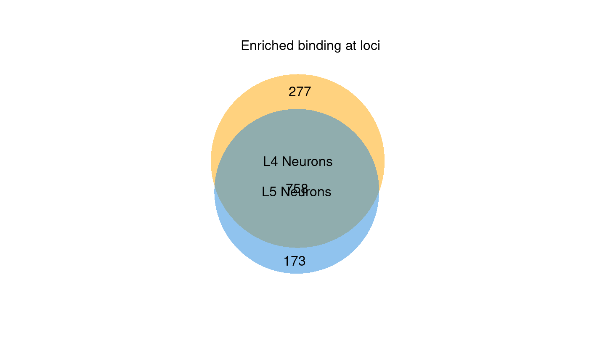
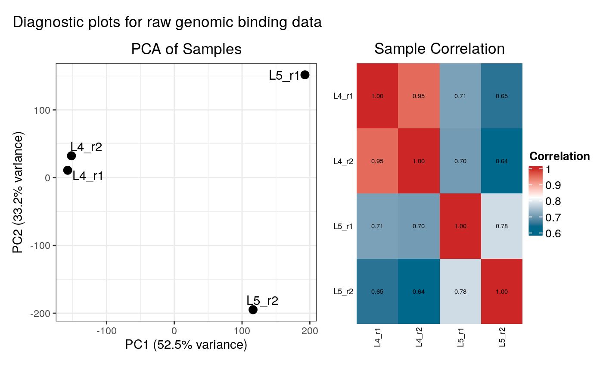
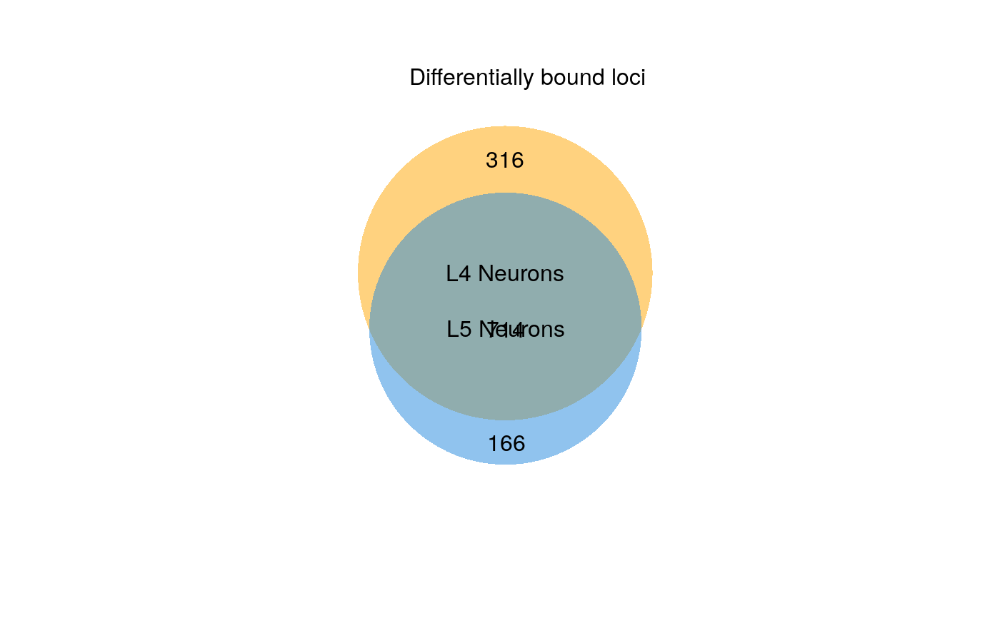
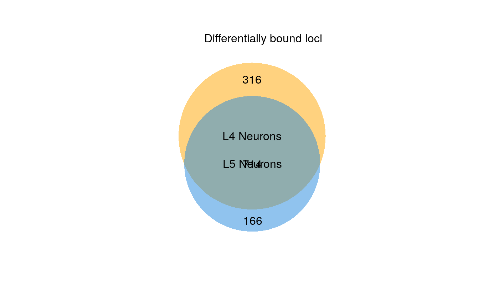

Draw proportional Venn diagrams for differential binding analysis
Source:R/plot_venn.R
plot_venn.RdGenerates a two-set proportional Venn diagram summarising the results of the differential binding analysis. The set union represents significant binding peaks that fail to show significant differences in occupancy; the exclusive regions of each set represent regions with enriched differential binding in that condition. Note that regions can be bound in both conditions, and still show differential occupancy. For gene expression analysis, the set of analysed genes can optionally be filtered by FDR such that the universe is restricted to only genes deemed expressed, as is typically expected for DEG representations.
Arguments
- diff_results
A `DamIDResults` object, as returned by `differential_binding()` or `differential_accessibility()`.
- title
Plot title to use (default: generated from test condition context)
- subtitle
Subtitle to use (default is empty).
- set_labels
Character vector of length 2. Names for the two sets/circles (defaults to the analysis condition names).
- filename
Character. Path at which to save the diagram, if not NULL.
- font
Font name to use (default is "sans")
- format
Character. Output plot format, "pdf" or "svg" (default "pdf").
- region_colours
Character vector of length 2 or 3. Fill colours for each set region (default: c("#FFA500", "#2288DD", "#CCCCCC")).
- fdr_filter_threshold
Numeric or NULL. If a value (e.g., 0.05) is provided, the universe of loci considered for the Venn diagram will be restricted to those that pass this FDR threshold in at least one sample. Used for illustrating DEGs with RNA Pol TaDa. If NULL (default), all tested loci are used.
Examples
# Helper function to create a sample DamIDResults object
.generate_example_results <- function() {
mock_genes_gr <- GenomicRanges::GRanges(
seqnames = S4Vectors::Rle("2L", 7),
ranges = IRanges::IRanges(
start = c(1000, 2000, 3000, 5000, 6000, 7000, 8000),
end = c(1500, 2500, 3500, 5500, 6500, 7500, 20000000)
),
gene_id = c("FBgn001", "FBgn002", "FBgn003", "FBgn004", "FBgn005", "FBgn006", "FBgn007"),
gene_name = c("geneA", "geneB", "geneC", "geneD", "geneE", "geneF", "LargeTestGene")
)
data_dir <- system.file("extdata", package = "damidBind")
loaded_data <- load_data_peaks(
binding_profiles_path = data_dir,
peaks_path = data_dir,
ensdb_genes = mock_genes_gr,
quantile_norm = TRUE
)
diff_results <- differential_binding(
loaded_data,
cond = c("L4 Neurons" = "L4",
"L5 Neurons" = "L5")
)
return(diff_results)
}
diff_results <- .generate_example_results()
#> Locating binding profile files
#> Building binding profile dataframe from input files ...
#> - Loaded: Bsh_Dam_L4_r1-ext300-vs-Dam.kde-norm
#> - Loaded: Bsh_Dam_L4_r2-ext300-vs-Dam.kde-norm
#> - Loaded: Bsh_Dam_L5_r1-ext300-vs-Dam.kde-norm
#> - Loaded: Bsh_Dam_L5_r2-ext300-vs-Dam.kde-norm
#> Locating peak files
#> Applying quantile normalisation
#> Calculating occupancy over peaks
#> Calculating average occupancy for 1208 regions...
#> Generating diagnostic plots...


#> Condition display names were sanitized for internal data:
#> 'L4 Neurons' -> 'L4.Neurons'
#> 'L5 Neurons' -> 'L5.Neurons'
#> Applying filter: Loci must have occupancy > 0 in at least 2 samples of at least one condition.
#> Filtered out 12 loci. 1196 loci remain for analysis.
#> Differential analysis setup:
#> Condition 1 Display Name: 'L4 Neurons' (Internal: 'L4.Neurons', Match Pattern: 'L4')
#> Found 2 replicates:
#> Bsh_Dam_L4_r1-ext300-vs-Dam.kde-norm_qnorm
#> Bsh_Dam_L4_r2-ext300-vs-Dam.kde-norm_qnorm
#> Condition 2 Display Name: 'L5 Neurons' (Internal: 'L5.Neurons', Match Pattern: 'L5')
#> Found 2 replicates:
#> Bsh_Dam_L5_r1-ext300-vs-Dam.kde-norm_qnorm
#> Bsh_Dam_L5_r2-ext300-vs-Dam.kde-norm_qnorm
#> limma contrasts: L4.Neurons-L5.Neurons
#> Applying eBayes moderation with `trend = TRUE, robust = TRUE`
#>
#> Filtering for positive enrichment (mean score > 0 in the enriched condition).
#>
#> 316 loci enriched in L4 Neurons
#> Highest-ranked genes:
#> LargeTestGene, LargeTestGene, LargeTestGene, LargeTestGene, LargeTestGene, LargeTestGene, LargeTestGene, LargeTestGene, LargeTestGene, LargeTestGene
#>
#> 166 loci enriched in L5 Neurons
#> Highest-ranked genes:
#> LargeTestGene, LargeTestGene, LargeTestGene, LargeTestGene, LargeTestGene, LargeTestGene, LargeTestGene, LargeTestGene, LargeTestGene, LargeTestGene
#> Displaying diagnostic plots...
 # Generate the Venn diagram
plot_venn(diff_results)

# Generate the Venn diagram
plot_venn(diff_results)
